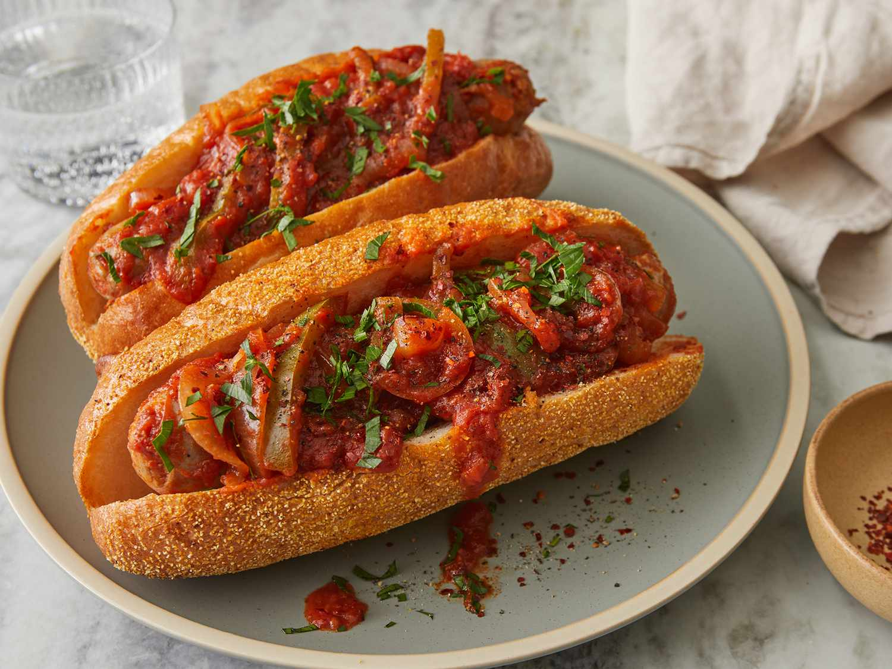

Slow Cooker Sausage with Sauce

This crockpot sausage recipe is a warm, easy meal made even easier in the slow cooker. These sausages may be served in sandwiches or over rice.
Ingredients
- 8 (4 ounce) links fresh Italian sausage
- 1 (26 ounce) jar spaghetti sauce
- 1 green bell pepper, seeded and sliced into strips
- 1 onion, sliced
- 6 hoagie rolls, split lengthwise (Optional)